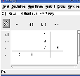
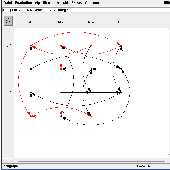
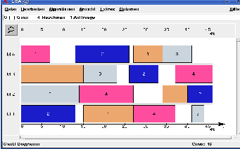

   |
|  |
Abbildung 8.3: Ausgabe der Ergebnisse
Der Nutzer betrachtet ein open-shop Problem mit m = 4 Maschinen und n = 4 Aufträgen und Makespanminimierung. Es liegen keine weiteren Nebenbedingungen vor. Wie ist in diesem Fall LiSA zu nutzen? Nach dem Start von LiSA wird unter Datei der Button Neu angeklickt. Das Problemtyp-Fenster öffnet sich und das Problem wird in der α∣β∣γ Beschreibung eingegeben, d.h. als Maschinenumgebung wird O und als Zielfunktion wird Cmax gewählt.
Weiter wird sowohl die Anzahl der Maschinen als auch die Anzahl der Aufträge auf 4 gesetzt. Nun stellt LiSA alle Module zur Verfügung, die es für diesen Problemtyp enthält. Gestartet wird mit der Eingabe der Bearbeitungszeiten (Button Bearbeiten, Parameter, Erzeugen, ... der Bearbeitungszeiten). Neben der Handeingabe, die für unser Beispiel benutzt wird, ist es möglich, einen Zufallszahlengenerator zu nutzen. Er erzeugt die Bearbeitungszeiten gleichverteilt aus dem Intervall [Minimum, Maximum]. Time Seed und Machine Seed sind beliebige Startparameter für den Generator, die bei gleicher Wahl gleiche Werte erzeugen.
Die Abbildung 8.1 zeigt die entsprechenden LiSA Fenster. Die Matrix der Bearbeitungszeiten PT ist gegeben durch
Daneben können die Daten auch aus einer xml-Datei eingelesen werden, deren Format in Kapitel 2.5 beschrieben wird. Jetzt gibt LiSA die verfügbaren Algorithmen frei. Unter Algorithmen sind sowohl exakte als auch heuristische Algorithmen für das betrachtete Problem verfügbar.
Die Abbildung 8.2 zeigt einige der verfügbaren Heuristiken. Schnelle Reihungsregeln, wie die LPT-Regel (longest processing time first), erzeugen einen ersten aktiven Schedule, mit dem verschiedene iterative Suchverfahren gestartet werden können. Hier wird das Fenster zu Simulated Annealing gezeigt. Verschiedene Parameter, wie z.B. die Nachbarschaft oder das Abkühlungsschema, können gewählt werden. Einzelheiten für die Parameter sind der Beschreibung des Suchverfahrens zu entnehmen. Ein weiteres konstruktives Verfahren ist die Anwendung eines Matchingalgorithmus, dabei werden Schritt für Schritt Operationen an den Plan angefügt, deren gleichzeitige Bearbeitung möglich ist, hier unter Minimierung der maximalen Bearbeitungszeit der gleichzeitig zu bearbeitenden Operationen.
LiSA stellt bei Anwendung eines Algorithmus sofort das Ganttdiagramm des erzeugten Schedules auf dem Bildschirm zur Verfügung. Alle Formen des Outputs sind in Abbildung 8.3 enthalten. So sind der Plan und die Matrix der Fertigstellungszeiten aller Operationen sowie ihre Visualisierungen im Plangraphen und im Ganttdiagramm unter Ansicht auswählbar. Ganttdiagramme können maschinen- und auftragsorientiert angezeigt werden, der kritische Weg kann hervorgehoben werden (Button Optionen). Wenn die Anzahl der Maschinen oder der Jobs zu groß ist, d.h. das Ganttdiagramm zu komplex ist, kann die Zoomfunktion helfen. Durch eventuell mehrfaches Zoomen kann das Ganntdiagramm so vergrößert werden, dass alle Informationen beim Scrollen sichtbar sind.
LiSA hat einige Extras, zwei davon sind in Abbildung 8.4 enthalten.
Die Ganttdiagramme können manipuliert werden, d. h. eine Operation, die durch Klicken der rechten Maustaste ausgewählt wird, kann sowohl in der Technologie (MO) als auch in der Organisation (JO) um eine Position nach vorn oder hinten verschoben werden. Falls die Verschiebung zu einem azyklischen Plangraphen führt, wird eine Fehlermeldung ausgegeben. Daneben ist es möglich, diese Operation als Quelle oder Senke des Plangraphen zu wählen. Dadurch wird immer ein azyklischer Plangraph erzeugt.
LiSA enthält als zweites Extra ein Komplexitätsmodul. Sobald in LiSA ein Problem in der α∣β∣γ Notation eingegeben wurde, kann die Komplexität des Problems unter Extras, Problemklassifikation abgerufen werden. LiSA nutzt hier die Osnabrücker Datenbank zur Komplexität von deterministischen Schedulingproblemen. Darüber hinaus steht sogar die vollständige Literaturquelle zur Verfügung.